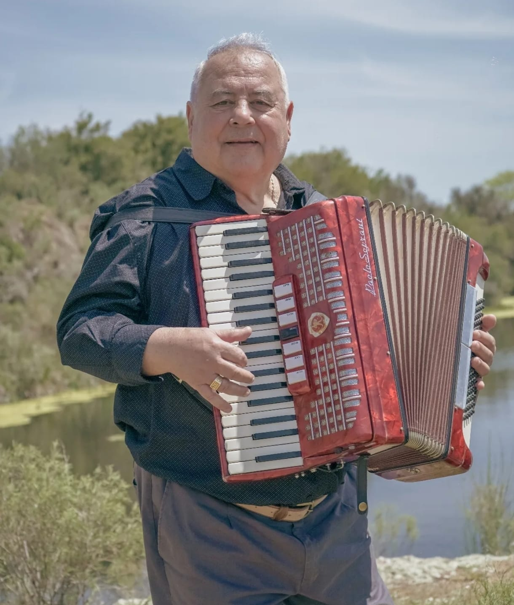
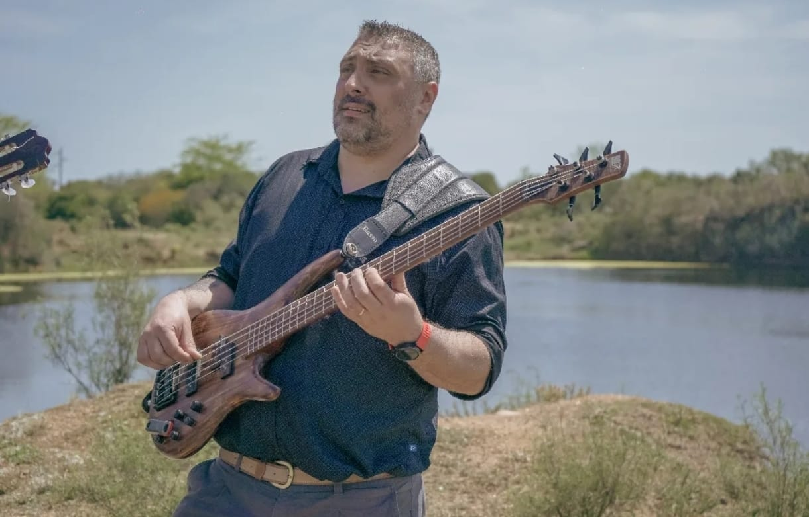
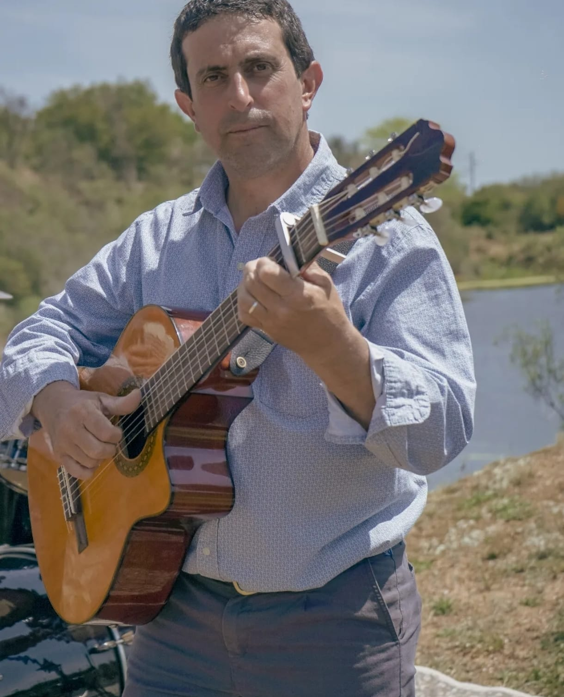
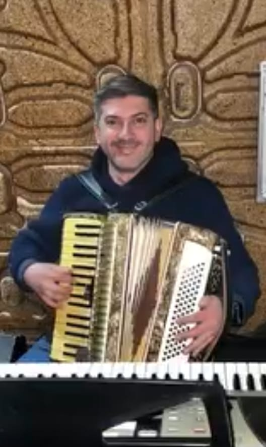
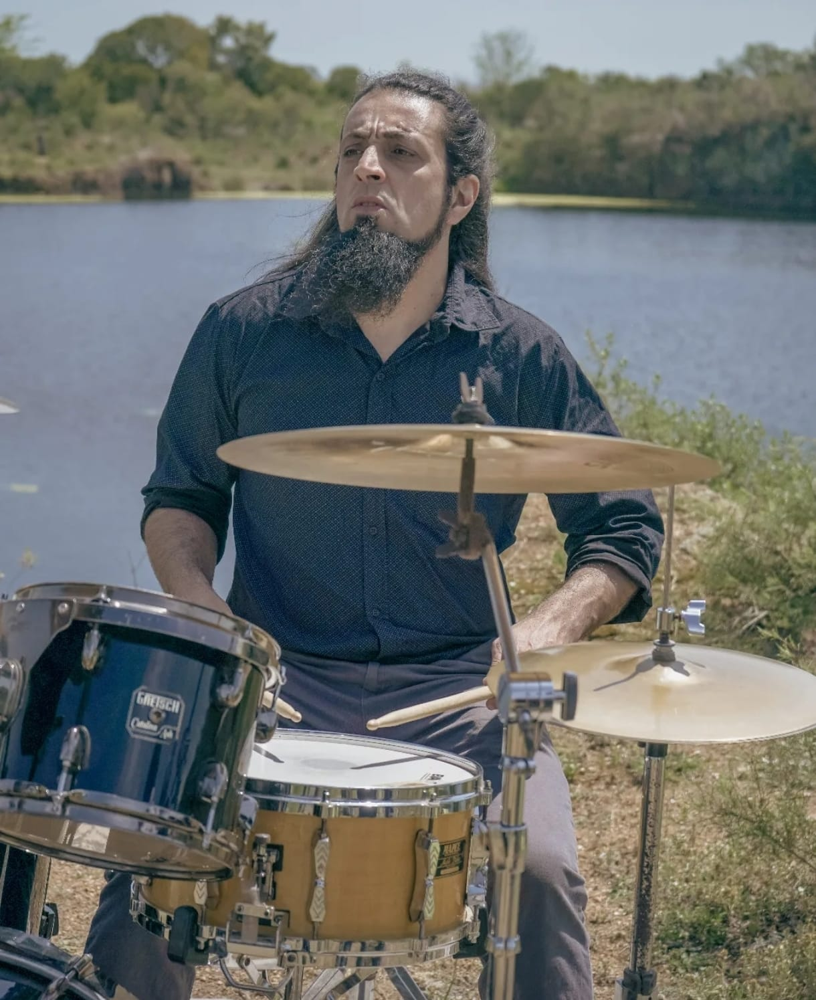

Autoría propia
No copiamos: apostamos a lo que nosotros escribimos. El respeto por la obra —propia y ajena— es innegociable.
Folklore uruguayo · Empalme Olmos
Un grupo que se fue construyendo con el tiempo, fiel a una identidad propia: milonga, chamarrita y raíz criolla con un sello que se reconoce.

El Grupo
El origen de Estampas del Sur se remonta a fines de 2010, en Empalme Olmos, con una formación distinta a la actual. Con los años el proyecto se fue consolidando —integrantes que llegaron y otros que siguieron su camino— pero siempre con la misma inquietud: hacer música propia.
Su marca es la autoría. Canciones originales atravesadas por pequeñas «muletillas» —un pasaje, un acorde— que funcionan como firma. Una identidad ligada al campo y al paisaje, que en el escenario se adapta al público entre milonga, chamarrita, polka y cumbia folklórica.
«Siempre mantuvimos la identidad de ser originales, de no copiar y apostar a lo que nosotros escribimos.»
— Saavedra, Estampas del Sur
Arco de Córdoba 2016 · Festival del Mate 2017 · Cosquín 2019 · Finalistas Generación 2020
Identidad sonora
No copiamos: apostamos a lo que nosotros escribimos. El respeto por la obra —propia y ajena— es innegociable.
Recursos que se repiten en cada canción —un pasaje, un acorde— y funcionan como nuestra firma sonora.
«Hay mucho campo, nos gustan los pájaros.» Una identidad ligada al paisaje y a la vida fuera de la ciudad.
Los que hacen el canto
El corazón del grupo. Iremos completando cada perfil con su nombre, instrumento e historia.

BajoBajo

Voz & guitarraPrimera voz · Segunda guitarra

Guitarra & vozPrimera guitarra · Segunda voz
Acordeón y teclados

BateríaBatería
Nuestro camino
Nacimos en 2011, en la ciudad de Pando, Canelones, con un objetivo tan simple como profundo: compartir nuestra música, nuestras raíces.
A lo largo del camino llegaron los reconocimientos. En 2016 ganamos el Arco de Córdoba, en Argentina, por nuestra labor cultural. En 2017 nos quedamos con el primer lugar en dos festivales —el del Mate, en San José, y el del Olimar, en Treinta y Tres—; ese mismo año nos declararon de Interés Cultural y Municipal la Intendencia de Canelones, junto a los Municipios de Pando y Empalme Olmos.
En 2018 editamos nuestro primer CD, «Savia Nueva», con el sello Productora Hipocampo; ese mismo año estrenamos nuestro primer videoclip, «Historias del Pasado». En 2019 representamos a Uruguay y a Canelones en el Festival Nacional de Folklore de Cosquín, con presentaciones en tres de sus principales escenarios, además de varias peñas tradicionales. Cerramos ese año ganando el Certamen de Canción Inédita de la Intendencia de Canelones.
Vinieron nuevos videoclips: «Sacudiendo el Ser Humano» en 2022, «Soy Uruguayo» en 2024 —este último nos valió una nominación a los Premios Graffiti—. Hoy estamos finalizando un nuevo disco, hecho enteramente de canciones propias.
Seguimos apostando a crecer, llevando nuestra música a nuevos escenarios, atentos a cada oportunidad de seguir recorriendo este hermoso camino musical.
En pantalla
Actuaciones y registros del grupo. Tocá para reproducir.
Camino recorrido
Premios, festivales y escenarios que fueron marcando el rumbo.
Nace el grupo en Pando, Canelones, para compartir su música y sus raíces.
Ganadores en Argentina, en reconocimiento a la labor cultural.
Primer lugar en el Festival del Mate (San José) y en el Festival del Olimar (Treinta y Tres). Declarados de Interés Cultural y Municipal.
Primer CD, con el sello Productora Hipocampo, y primer videoclip: «Historias del Pasado».
Representando a Uruguay y Canelones en el festival mayor del folklore. Ganadores del Certamen de Canción Inédita de la Intendencia de Canelones.
Finalistas del certamen de videoclip del programa, emitido por Canal 10 y Canal A+V.
Segundo videoclip del grupo.
Tercer videoclip, con una nominación a los Premios Graffiti.
Finalizando un nuevo CD, integrado por canciones de autoría propia.
Dónde vernos
En preparación
«Queda terminar un tema nomás.» Un nuevo álbum, un videoclip en camino y más presentaciones en festivales. Todo desde la autogestión y un camino independiente.
Momentos
Contrataciones
Festivales, peñas, salas y eventos. Trabajamos como un equipo profesional —con roles claros en redes, contrataciones y administración— para que cada presentación esté cuidada de principio a fin.